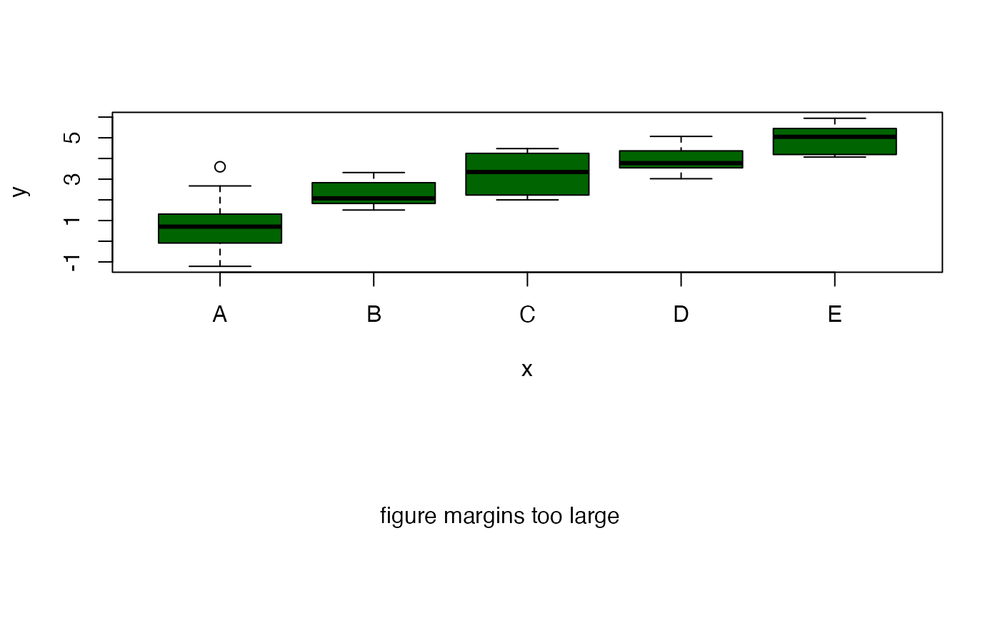

sinkplot.RdDivert R's standard text output to a graphics device.
sinkplot(operation = c("start", "plot", "cancel"), ...)
| operation | See below |
|---|---|
| ... | Plot arguments. (Ignored unless |
This function allows the printed output of R commands to be captured and displayed on a graphics device.
The capture process is started by calling
sinkplot("start"). Now R commands can be executed and all
printed output (except errors) will be captured. When the desired
text has been captured sinkplot("plot") can be called to
actually display the output. sinkplot("cancel") can be used to
abort the output capture without plotting.
The current implementation does not allow sinkplot to be nested.
Invisibly returns a character vector containing one element for each line of the captured output.
Functionality requested by Kevin Wright kwright@eskimo.com in the R-devel newlist posting https://stat.ethz.ch/pipermail/r-devel/2004-January/028483.html.
set.seed(12456) x <- factor(sample( LETTERS[1:5], 50, replace=TRUE)) y <- rnorm(50, mean=as.numeric(x), sd=1) ## construct a figure showing a box plot of the data, followed by an ## analysis of variance table for the data layout(cbind(1:2), heights=c(2,1)) boxplot(y~x, col="darkgreen") sinkplot() anova(lm(y~x))#> Analysis of Variance Table #> #> Response: y #> Df Sum Sq Mean Sq F value Pr(>F) #> x 4 120.475 30.1188 30.399 2.824e-12 *** #> Residuals 45 44.585 0.9908 #> --- #> Signif. codes: 0 ‘***’ 0.001 ‘**’ 0.01 ‘*’ 0.05 ‘.’ 0.1 ‘ ’ 1sinkplot("plot",col="darkgreen")#> Error in max(sapply(unlist(slist), strwidth, cex = cex)): invalid 'type' (list) of argument